I build learning systems that connect instructional design, analytics, and responsible AI.
I design the structures institutions need when growth, compliance, and learner support move faster than existing process. My work focuses on curriculum design, faculty development, learning analytics, and practical AI adoption in higher education.
Courses supported annually through distance education systems.
Annual course enrollments supported across academic programs.
Reduction in reporting and processing time through analytics workflows.
Enrollment growth after designing and launching a fully online professional doctoral program.
Professionals represented through national AI competency framework work with the NCCAOM AI Taskforce.
AI strategy in education is often discussed as a policy problem or a classroom problem. I approached it as an institutional design problem that required alignment across governance, teaching practice, and student competency.
AI was already shaping student work and faculty decision-making, but there was no shared structure for how the institution should respond. Faculty needed support. Students needed a way to build judgment rather than tool dependence. The school also needed policy language that was practical enough to use.
I built the work across three levels. First, I helped shape institutional guidance so faculty had a starting point for classroom decisions. Second, I designed faculty development resources and practical support around AI use in teaching. Third, I developed student-facing learning experiences, including a full AI literacy course and early concepts for simulation-based tools.
This work later expanded beyond the institution. I joined the NCCAOM AI Taskforce and contributed to competency framework work intended to support a national integrative healthcare profession.
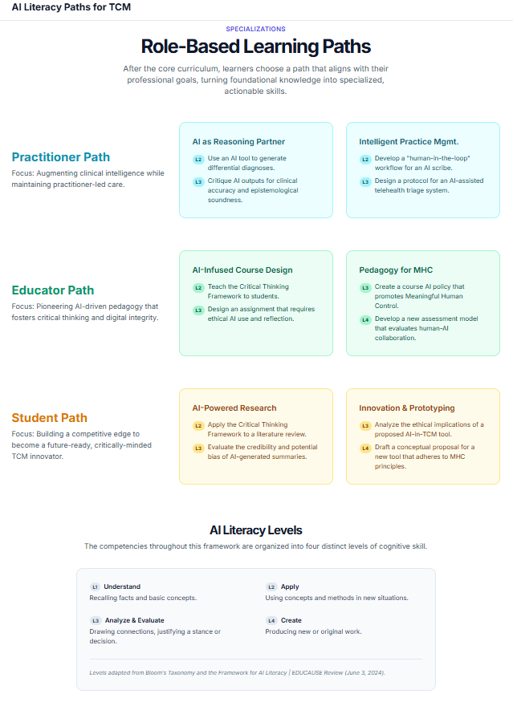
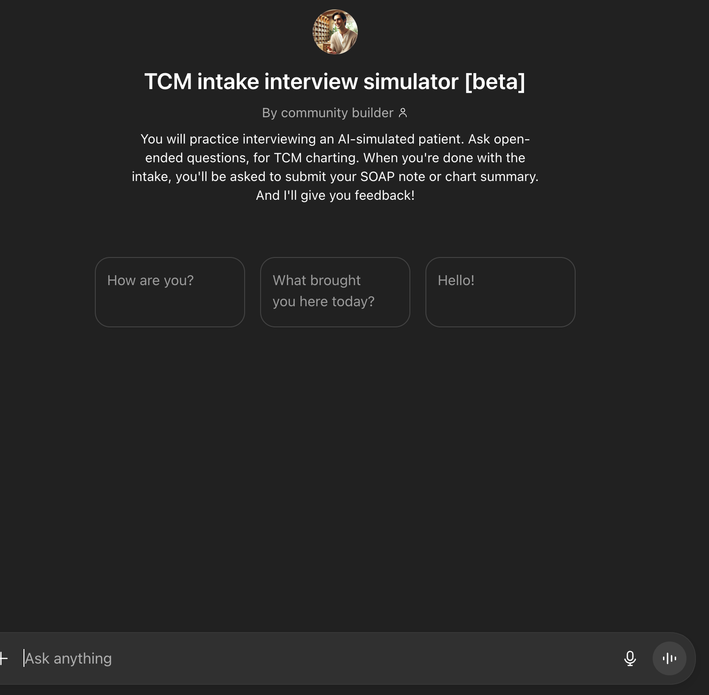
The result was a connected AI literacy ecosystem rather than a single policy document or workshop. The work now spans governance, faculty support, course design, and national framework development. It gave the institution a clearer way to move from uncertainty to structured experimentation.
Some of the student-facing tools are still early prototypes. The main value came from building a coherent foundation first, then expanding where the institution had real readiness.
VUIM needed distance education systems that could scale across three campuses, stay compliant with NC-SARA and ACAHM, and support a fully online professional doctoral program.
The institution had no unified distance education infrastructure. NC-SARA participation, annual renewal, and faculty-facing compliance systems all needed to be built. At the same time, the existing doctoral pathway had low enrollment and an outdated structure. Leadership wanted to move it fully online and recruit nationally, which meant tightening the alignment with ACAHM competency standards as part of the redesign.
I built the institutional layer first: LMS engagement expectations, compliance documentation, recurring NC-SARA processes, and faculty support structures. These gave the school a foundation for running distance education at scale.
For the doctoral program, I conducted market review, defined four clinical focus areas, and used ACAHM competency domains as the organizing frame. I mapped program objectives to competency domains, aligned course-level outcomes, and designed learning models (synchronous sessions, case analysis forums, research review, virtual clinical experiences) that could meet both academic quality and clock-hour requirements. I worked with subject matter experts throughout to shape course content and activities.
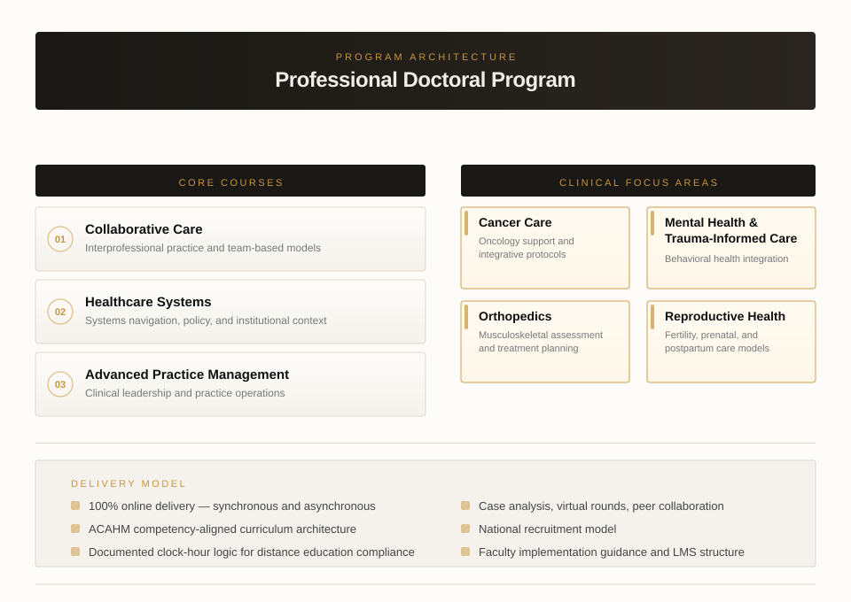
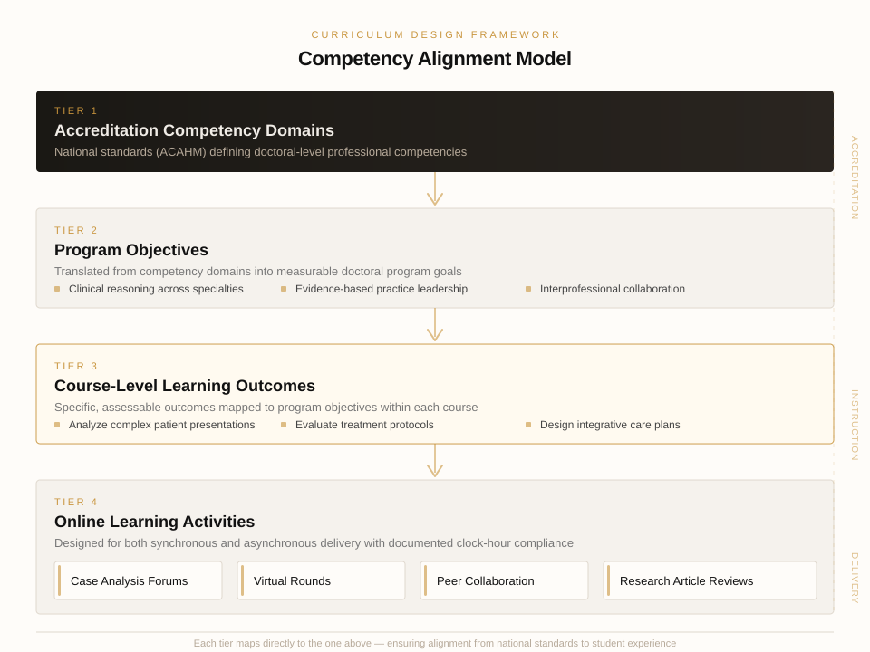
The infrastructure now supports 600+ courses and 2,000+ annual course enrollments across three campuses. The doctoral program grew from fewer than 20 students per term to more than 60 after launch.
I led the program design and distance education structure. The enrollment growth also depended on admissions effort, leadership support, and institutional follow-through. The strongest outcome was a reusable structure the institution could scale beyond this one program.
The institution had large amounts of academic and clinical data, but almost none of it was organized for decision-making. I built the reporting structures, workflows, and dashboards needed to make the data usable.
Basic questions about academic performance, clinic activity, and program outcomes were difficult to answer because the institution did not have an organized analytics structure. Data existed in multiple systems, but it was not being turned into information people could use.
I established the reporting structure from scratch and taught myself the tools required to make it work. That included Power BI dashboards, clinic data workflows, board exam tracking, and other reporting pipelines that turned scattered records into usable views for planning and review. I also experimented with local, on-premises processing when privacy or cost made that the better option.
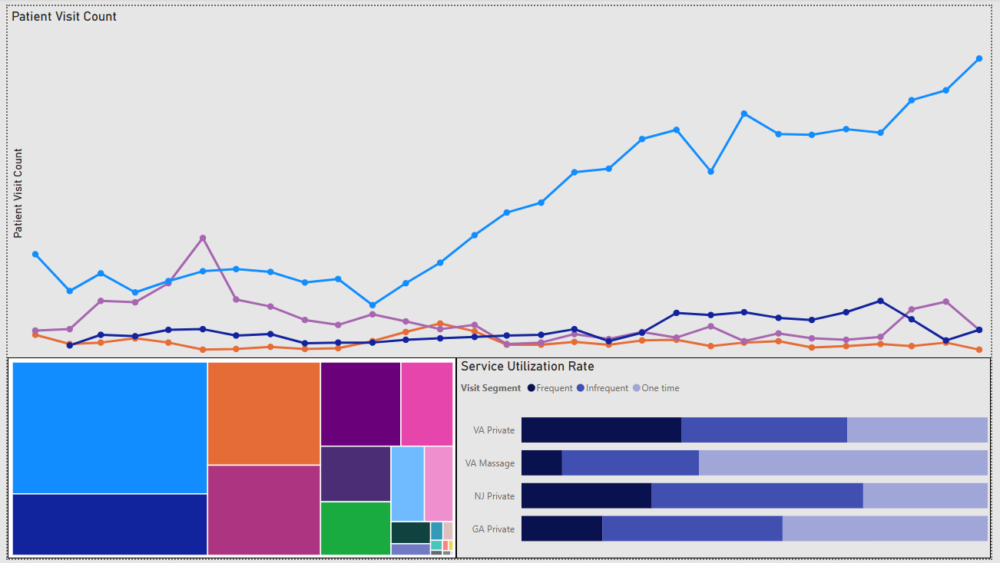
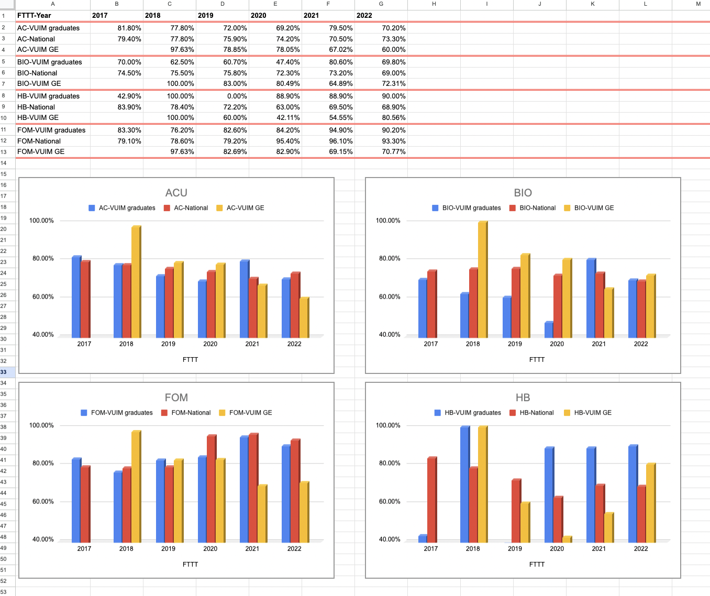
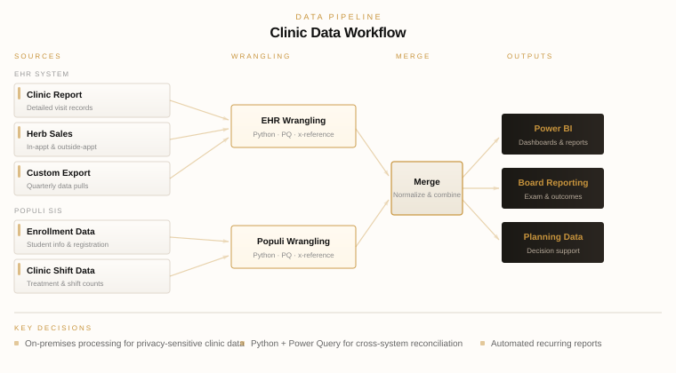
Dashboard screenshots from production environment. Data anonymized for confidentiality.
The school now has a working data environment for academic and clinical reporting, with dashboards and recurring reports that support planning and decision-making. Processing and reporting time dropped by 95 percent. What used to take days now takes hours.
I did not come into this role as a formal data specialist. The work grew from a practical need to make teaching, learning, and operations more visible and more manageable.
I try to protect the struggle that matters and reduce the friction that does not. Learners should spend effort on thinking, judgment, and practice. They should not waste energy on unclear instructions, clumsy workflows, or avoidable confusion.
This principle shapes everything from course structure and faculty support to AI tools, onboarding resources, and clinical readiness training.
Technology can help, but only when the problem is actually technical. I try to slow the process down long enough to identify whether the issue is structural, instructional, operational, or cultural. That makes the eventual solution much more useful.
I prefer designs that leave people more capable after using them. That means reusable templates, practical guidance, transparent logic, and systems that help faculty, staff, and students work with more confidence over time.
Built a workflow using Whisper, ChatGPT, and NotebookLM to accelerate asynchronous course development from recorded lectures and existing materials.
Faculty review and subject matter expert verification stayed in the loop at every stage to ensure accuracy and instructional quality.
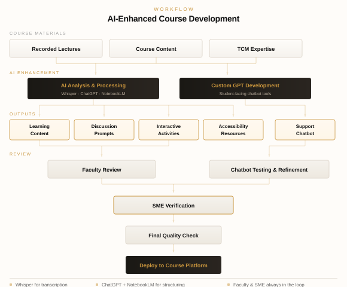
Designed and implemented safety training programs for staff and clinical interns. More than 110 employees completed institutional safety training, and more than 300 interns participate in clinic readiness training each quarter.
Loose needle incidents dropped to zero after implementation of the redesigned safety training sequence.
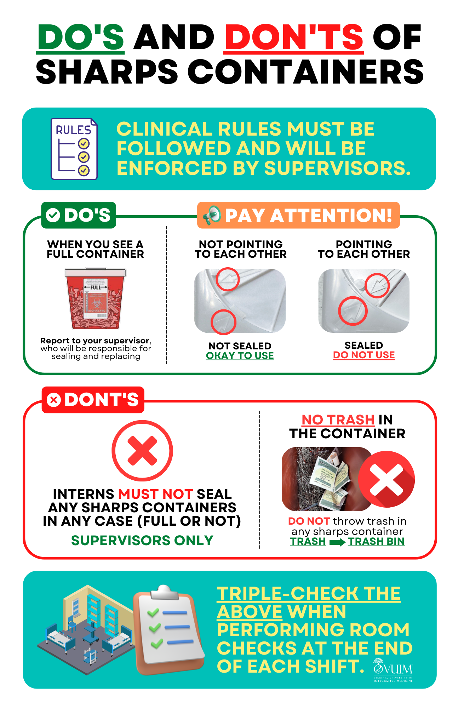
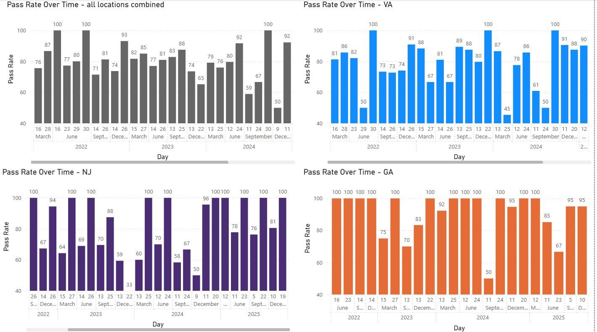
Managed and supported more than 50 faculty across three campuses through onboarding, async training, newsletters, and practical teaching support.
Built a portfolio of internal learning resources covering online learning readiness, faculty essentials, board exam preparation, AI literacy, and academic integrity.
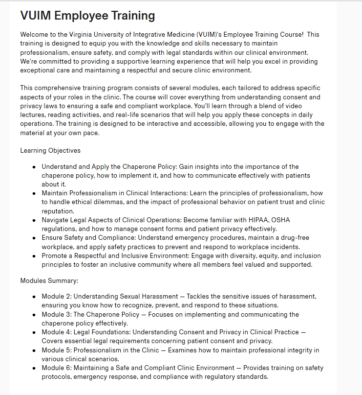
Designed a low-cost article curation workflow connecting form intake, automation, AI summarization, and structured archiving in Notion and Google Drive.
Also developed an AI-powered curriculum map prototype to help students visualize program pathways and next-step options.
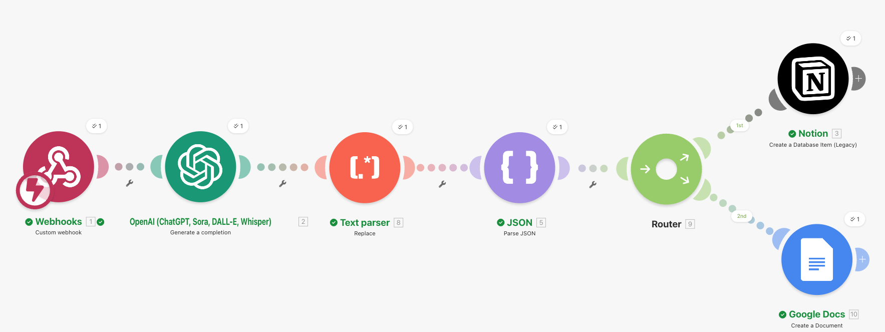
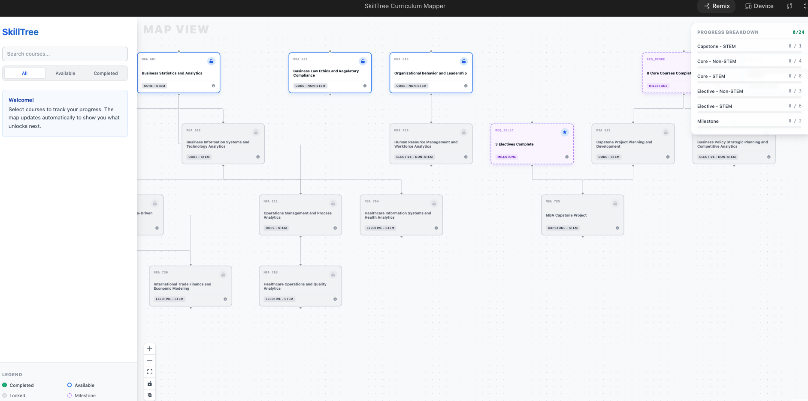
Needs analysis, faculty development systems, program architecture, policy-to-practice implementation, compliance-aware academic design, and institutional change support.
Async course design, simulation-based learning, assessment alignment, learner support design, distance education systems, and subject matter expert collaboration.
Responsible AI adoption, prompt and workflow design, automation architecture, Power BI reporting, Python-based data work, and privacy-aware experimentation.
I look for the gap, define the actual problem, and build the structure that helps people move forward with more clarity.